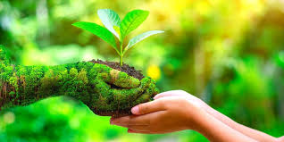

Misiunea Noastră
Fondată în 2023, EcoScut s-a născut dintr-o viziune simplă: o Moldovă mai curată și mai verde. Oferim o platformă unde cetățenii pot raporta poluarea și organiza evenimente de ecologizare.
Numele nostru, EcoScut (Eco-Shield), reflectă angajamentul de a proteja resursele prețioase ale țării, de la Nistru și Prut până la pădurile noastre antice.

Valorile Noastre
Comunitatea pe Primul Loc
Credem în puterea acțiunii colective pentru a crea o schimbare durabilă.
Incluziune
Toată lumea este binevenită în misiunea noastră, indiferent de vârstă sau experiență.
Impact Real
Ne concentrăm pe rezultate măsurabile care fac diferența pentru mediul Moldovei.
Excelență
Eforturile noastre mențin cele mai înalte standarde în toate inițiativele.
Impactul în Cifre
1,247
Rapoartari
3,892
Voluntari Activi
856
Zone Curățate